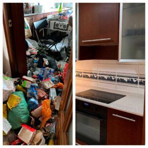

Para alguien que nunca se ha aventurado dentro de la casa de un Diógenes, pero tiene una idea de cómo se vería una vez que entra por la puerta principal, la mayoría de las veces es más estresante de lo esperado cuando finalmente entra. ¿Cómo puede esta persona recopilar tantos objetos hasta el punto de ponerse en peligro y causar tal ruptura con sus seres queridos?
Entonces, la gran pregunta que todos quieren saber es:
"¿Qué está pasando realmente dentro de la casa de Un Síndrome de Diógenes?"
No hay dos Diógenes exactamente iguales y la gravedad de su enfermedad varía de leve a grave. Pero hablando en términos generales, echemos un vistazo rápido a las condiciones de vida que suele enconar el Síndrome de Diógenes y veamos los peligros que encierra.
El humo
En la superficie, es fácil ver que la colección de un acumulador generalmente consiste en materiales inflamables (principalmente papel), y cualquier tipo de chispa desencadenaría un fuego que se propagaría en un instante. Los periódicos, revistas y envases de alimentos y bebidas son muy combustibles, mientras que artículos como botellas de plástico, álbumes de vinilo viejos y caucho provocan un humo tóxico en caso de que se incendien. Es por ello que la Limpieza de Diógenes es prioritaria
Llame al 911
Cuando el Síndrome de Diógenes se lleva al extremo, las áreas habitables solo se vuelven accesibles a través de un camino que conduce de una habitación a otra. A veces ni siquiera hay un camino claro del que hablar y alguien debe caminar sobre la "colección" del acumulador para moverse. Las entradas y salidas a las habitaciones normalmente están completamente cerradas y puede ser imposible hacer un último esfuerzo para escapar por una ventana. Si hubiera una emergencia médica, el Diógenes y cualquier otro miembro de la familia o mascota no podrían salir a tiempo. Además, debido a que hay tanto desorden alrededor, los paramédicos tendrían problemas para llegar a una persona.
Todo se derrumba
Una ejecución universal que los Diógenes utilizan para hacer más espacio cuando han llenado todo el espacio del piso con desorden es comprar cajas grandes. Para liberar algo de espacio para que puedan recoger más pertenencias, un acumulador apilará cajas pesadas una encima de la otra. El problema con esto es bastante obvio. Dado que las cajas cargadas están colocadas sobre otras cajas que no son completamente estables, el peligro de que caigan sobre una persona es muy real. Incluso se han documentado casos de estudio en los que personas han muerto por el impacto de una caja caída, o han quedado atrapadas debajo de ella y no pudieron liberarse. Para la inmensa mayoría de los Diógenes que viven solos, el peligro se agrava aún más debido a su incapacidad para moverse libremente por su casa.
Una base sólida
Debido al peso de cizallamiento extremo de la colección del Diógenes, es posible que la propia casa (dependiendo de su edad y construcción) no pueda soportar la carga. Las tablas del piso que no se apoyan correctamente pueden combarse y eventualmente doblarse. Y si la reserva se acumula en un segundo piso, una sección simplemente puede colapsar, hiriendo o incluso matando a cualquiera que esté debajo. Las paredes tampoco son inmunes al peso extremo. Pueden formarse grietas y hacer que las paredes se doblen hacia afuera bajo la tensión constante de los materiales excesivos. Es por ello que a la hora de realizar la Limpieza de Diógenes se debe planificar bien y estudiar la arquitectura del inmueble.
El camino a la destrucción

Como se mencionó anteriormente, el desorden en la casa de un Diógenes reduce en gran medida la movilidad. El Diógenes se acostumbra a moverse memorizando el camino de menor resistencia de una habitación a otra. Esto a menudo los lleva a defender su comportamiento y decir algo en el sentido de que pueden vivir cómodamente en el hogar sin problemas. Debido a la cantidad de obstrucciones, incluso el Diógenes es susceptible de tropezar o caerse de un tramo de escaleras si no presta mucha atención a sus movimientos. La investigación muestra que la tendencia al acaparamiento alcanza su punto máximo cuando alguien llega a los 40 años. Si no se trata, continuará hasta que la persona muera. Y dado que la mayoría de las personas mayores experimentan diversos grados de fragilidad ósea, las fracturas potencialmente mortales son una preocupación real.
La infestación genera enfermedades
Con la compulsión de acumulación compulsiva viene la incapacidad de la persona para tirar artículos que otros imaginan como basura simple. El desperdicio de alimentos es la mayor preocupación debido a su capacidad para germinar bacterias y atraer plagas no deseadas como ratas, mapaches, ardillas e insectos portadores de enfermedades como las cucarachas. Las infestaciones en toda regla no son infrecuentes y, sin embargo, el Diógenes suele pasar por alto estas deplorables condiciones de vida. Cuando se le pregunta, la respuesta suele ser "Lo limpiaré mañana / la semana que viene" o "Me doy cuenta de que hay insectos y animales corriendo pero no me molestan y yo no los molesto".
Tareas domésticas diarias
El creciente tesoro puede obstaculizar la capacidad de la persona para realizar las tareas del día a día que afectan su salud y bienestar. Los electrodomésticos como estufas, lavadoras y fregaderos pueden quedar inutilizables, lo que afecta la capacidad de la persona para cocinar, lavar la ropa e incluso mantenerse al día con la higiene diaria. Es por ello que una vez que se realiza la Limpieza de Diógenes se debe vigilar que el individuo realice un mantenimiento de Limpieza.